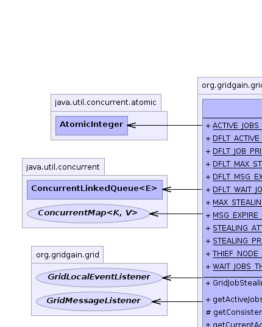
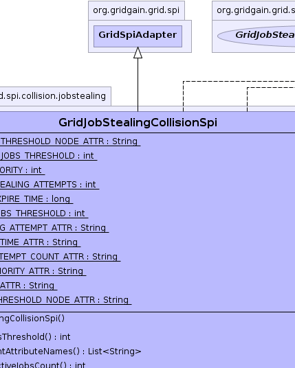
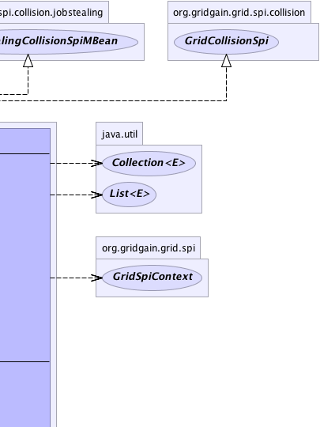
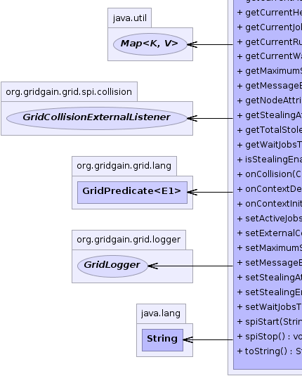
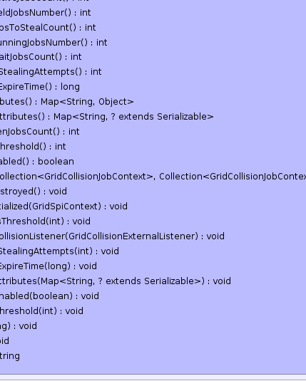
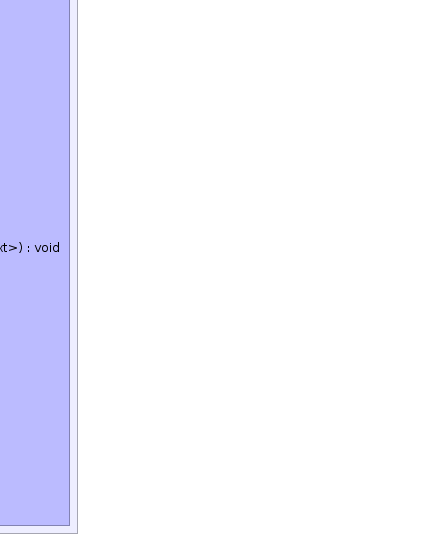

org.gridgain.grid.spi.GridSpiAdapter
org.gridgain.grid.spi.collision.jobstealing.GridJobStealingCollisionSpi
org.gridgain.grid.spi.GridSpiAdapter
org.gridgain.grid.spi.collision.jobstealing.GridJobStealingCollisionSpi
|
GridGain™ 3.1.1c
Community Edition |
|||||||||
| PREV CLASS NEXT CLASS | FRAMES NO FRAMES | |||||||||
| SUMMARY: NESTED | FIELD | CONSTR | METHOD | DETAIL: FIELD | CONSTR | METHOD | |||||||||
java.lang.Object
@GridSpiInfo(author="GridGain Systems, Inc.",
url="www.gridgain.com",
email="support@gridgain.com",
version="3.1.1c.19062011")
@GridSpiMultipleInstancesSupport(value=true)
public class GridJobStealingCollisionSpiCollision SPI that supports job stealing from over-utilized nodes to under-utilized nodes. This SPI is especially useful if you have some jobs within task complete fast, and others sitting in the waiting queue on slower nodes. In such case, the waiting jobs will be stolen from slower node and moved to the fast under-utilized node.
The design and ideas for this SPI are significantly influenced by
Java Fork/Join Framework
authored by Doug Lea and planned for Java 7. GridJobStealingCollisionSpi took
similar concepts and applied them to the grid (as opposed to within VM support planned
in Java 7).
Quite often grids are deployed across many computers some of which will always be more powerful than others. This SPI helps you avoid jobs being stuck at a slower node, as they will be stolen by a faster node. In the following picture when Node3 becomes free, it steals Job13 and Job23 from Node1 and Node2 respectively.

Note that this SPI must always be used in conjunction with
GridJobStealingFailoverSpi.
The responsibility of Job Stealing Failover SPI is to properly route stolen
jobs to the nodes that initially requested (stole) these jobs. The
SPI maintains a counter of how many times a jobs was stolen and
hence traveled to another node. GridJobStealingCollisionSpi
checks this counter and will not allow a job to be stolen if this counter
exceeds a certain threshold GridJobStealingCollisionSpi.setMaximumStealingAttempts(int).
GridJobStealingCollisionSpi either from Spring XML file or
directly. The following configuration parameters are supported:
GridJobStealingCollisionSpi.setActiveJobsThreshold(int)).
GridJobStealingCollisionSpi.setWaitJobsThreshold(int)).
GridJobStealingCollisionSpi.setMessageExpireTime(long)).
GridJobStealingCollisionSpi.setMaximumStealingAttempts(int)).
GridJobStealingCollisionSpi.setStealingEnabled(boolean)).
GridJobStealingCollisionSpi.setStealingAttributes(Map)).
GridJobStealingCollisionSpi spi = new GridJobStealingCollisionSpi();
// Configure number of waiting jobs
// in the queue for job stealing.
spi.setWaitJobsThreshold(10);
// Configure message expire time (in milliseconds).
spi.setMessageExpireTime(500);
// Configure stealing attempts number.
spi.setMaximumStealingAttempts(10);
// Configure number of active jobs that are allowed to execute
// in parallel. This number should usually be equal to the number
// of threads in the pool (default is 100).
spi.setActiveJobsThreshold(50);
// Enable stealing.
spi.setStealingEnabled(true);
// Set stealing attribute to steal from/to nodes that have it.
spi.setStealingAttributes(Collections.singletonMap("node.segment", "foobar"));
GridConfigurationAdapter cfg = new GridConfigurationAdapter();
// Override default Collision SPI.
cfg.setCollisionSpi(spi);
Here is an example of how this SPI can be configured from Spring XML configuration:
<property name="collisionSpi">
<bean class="org.gridgain.grid.spi.collision.jobstealing.GridJobStealingCollisionSpi">
<property name="activeJobsThreshold" value="100"/>
<property name="waitJobsThreshold" value="0"/>
<property name="messageExpireTime" value="1000"/>
<property name="maximumStealingAttempts" value="10"/>
<property name="stealingEnabled" value="true"/>
<property name="stealingAttributes">
<map>
<entry key="node.segment" value="foobar"/>
</map>
</property>
</bean>
</property>

For information about Spring framework visit www.springframework.org
| Wiki | |
| Forum |
|  |  |  |
|  |  |  |
| Field Summary | |
|---|---|
static String |
ACTIVE_JOBS_THRESHOLD_NODE_ATTR
Threshold of maximum jobs executing concurrently. |
static int |
DFLT_ACTIVE_JOBS_THRESHOLD
Default number of parallel jobs allowed (value is 95 which is
slightly less same as default value of threads in the execution thread pool
to allow some extra threads for system processing). |
static int |
DFLT_JOB_PRIORITY
Default start value for job priority (value is 0). |
static int |
DFLT_MAX_STEALING_ATTEMPTS
Maximum number of attempts to steal job by another node (default is 5). |
static long |
DFLT_MSG_EXPIRE_TIME
Default steal message expire time in milliseconds (value is 1000). |
static int |
DFLT_WAIT_JOBS_THRESHOLD
Default threshold of waiting jobs. |
static String |
MAX_STEALING_ATTEMPT_ATTR
Maximum stealing attempts attribute name. |
static String |
MSG_EXPIRE_TIME_ATTR
Stealing request expiration time attribute name. |
static String |
STEALING_ATTEMPT_COUNT_ATTR
Name of job context attribute containing current stealing attempt count. |
static String |
STEALING_PRIORITY_ATTR
Stealing priority attribute name. |
static String |
THIEF_NODE_ATTR
Job context attribute for storing thief node UUID (this attribute is used in job stealing failover SPI). |
static String |
WAIT_JOBS_THRESHOLD_NODE_ATTR
Threshold of maximum jobs on waiting queue. |
| Constructor Summary | |
|---|---|
GridJobStealingCollisionSpi()
|
|
| Method Summary | |
|---|---|
int |
getActiveJobsThreshold()
Gets number of jobs that can be executed in parallel. |
protected List<String> |
getConsistentAttributeNames()
Returns back a list of attributes that should be consistent for this SPI. |
int |
getCurrentActiveJobsCount()
Gets current number of jobs that are being executed. |
int |
getCurrentHeldJobsNumber()
Gets number of currently 'held' jobs. |
int |
getCurrentJobsToStealCount()
Gets current number of jobs to be stolen. |
int |
getCurrentRunningJobsNumber()
|
int |
getCurrentWaitJobsCount()
Gets current number of jobs that wait for the execution. |
int |
getMaximumStealingAttempts()
Gets maximum number of attempts to steal job by another node. |
long |
getMessageExpireTime()
Message expire time configuration parameter. |
Map<String,Object> |
getNodeAttributes()
This method is called before SPI starts (before method GridSpi.spiStart(String)
is called). |
Map<String,? extends Serializable> |
getStealingAttributes()
Configuration parameter to enable stealing to/from only nodes that have these attributes set (see GridNode.getAttribute(String) and
GridConfiguration.getUserAttributes() methods). |
int |
getTotalStolenJobsCount()
Gets total number of stolen jobs. |
int |
getWaitJobsThreshold()
Gets job count threshold at which this node will start stealing jobs from other nodes. |
boolean |
isStealingEnabled()
Gets flag indicating whether this node should attempt to steal jobs from other nodes. |
void |
onCollision(Collection<GridCollisionJobContext> waitJobs,
Collection<GridCollisionJobContext> activeJobs)
This is a callback called when either new grid job arrived or executing job finished its execution. |
void |
onContextDestroyed()
Callback invoked prior to stopping grid before SPI context is destroyed. |
void |
onContextInitialized(GridSpiContext spiCtx)
Callback invoked when SPI context is initialized. |
void |
setActiveJobsThreshold(int activeJobsThreshold)
Sets number of jobs that are allowed to be executed in parallel on this node. |
void |
setExternalCollisionListener(GridCollisionExternalListener extLsnr)
Listener to be set for notification of external collision events (e.g. job stealing). |
void |
setMaximumStealingAttempts(int maxStealingAttempts)
Sets maximum number of attempts to steal job by another node. |
void |
setMessageExpireTime(long msgExpireTime)
Message expire time configuration parameter. |
void |
setStealingAttributes(Map<String,? extends Serializable> stealAttrs)
Configuration parameter to enable stealing to/from only nodes that have these attributes set (see GridNode.getAttribute(String) and
GridConfiguration.getUserAttributes() methods). |
void |
setStealingEnabled(boolean isStealingEnabled)
Sets flag indicating whether this node should attempt to steal jobs from other nodes. |
void |
setWaitJobsThreshold(int waitJobsThreshold)
Sets wait jobs threshold. |
void |
spiStart(String gridName)
This method is called to start SPI. |
void |
spiStop()
This method is called to stop SPI. |
String |
toString()
|
| Methods inherited from class org.gridgain.grid.spi.GridSpiAdapter |
|---|
assertParameter, configInfo, createSpiAttributeName, getAuthor, getGridGainHome, getLocalNodeId, getName, getSpiContext, getStartTimestamp, getStartTimestampFormatted, getUpTime, getUpTimeFormatted, getVendorEmail, getVendorUrl, getVersion, injectables, registerMBean, setJson, setName, startInfo, startStopwatch, stopInfo, unregisterMBean |
| Methods inherited from class java.lang.Object |
|---|
clone, equals, finalize, getClass, hashCode, notify, notifyAll, wait, wait, wait |
| Methods inherited from interface org.gridgain.grid.spi.GridSpi |
|---|
getName |
| Methods inherited from interface org.gridgain.grid.spi.GridSpiJsonConfigurable |
|---|
setJson |
| Methods inherited from interface org.gridgain.grid.spi.GridSpiManagementMBean |
|---|
getAuthor, getGridGainHome, getLocalNodeId, getName, getStartTimestamp, getStartTimestampFormatted, getUpTime, getUpTimeFormatted, getVendorEmail, getVendorUrl, getVersion |
| Field Detail |
|---|
public static final int DFLT_MAX_STEALING_ATTEMPTS
5).
public static final int DFLT_ACTIVE_JOBS_THRESHOLD
95 which is
slightly less same as default value of threads in the execution thread pool
to allow some extra threads for system processing).
public static final long DFLT_MSG_EXPIRE_TIME
1000).
Once this time is elapsed and no response for steal message is received,
the message is considered lost and another steal message will be generated,
potentially to another node.
public static final int DFLT_WAIT_JOBS_THRESHOLD
0).
public static final int DFLT_JOB_PRIORITY
0).
public static final String THIEF_NODE_ATTR
public static final String WAIT_JOBS_THRESHOLD_NODE_ATTR
public static final String ACTIVE_JOBS_THRESHOLD_NODE_ATTR
public static final String STEALING_ATTEMPT_COUNT_ATTR
GridJobContext,
Constant Field Valuespublic static final String MAX_STEALING_ATTEMPT_ATTR
public static final String MSG_EXPIRE_TIME_ATTR
public static final String STEALING_PRIORITY_ATTR
| Constructor Detail |
|---|
public GridJobStealingCollisionSpi()
| Method Detail |
|---|
@GridSpiConfiguration(optional=true) public void setActiveJobsThreshold(int activeJobsThreshold)
If not provided, default value is {@link #DFLT_ACTIVE_JOBS_THRESHOLD}.
activeJobsThreshold - Maximum number of jobs to be executed in parallel.public int getActiveJobsThreshold()
getActiveJobsThreshold in interface GridJobStealingCollisionSpiMBean@GridSpiConfiguration(optional=true) public void setWaitJobsThreshold(int waitJobsThreshold)
Note this value may be different (but does not have to be) for different nodes in the grid. You may wish to give stronger nodes a smaller waiting threshold so they can start stealing jobs from other nodes sooner.
If not provided, default value is {@link #DFLT_WAIT_JOBS_THRESHOLD}.
waitJobsThreshold - Default job priority.public int getWaitJobsThreshold()
getWaitJobsThreshold in interface GridJobStealingCollisionSpiMBean@GridSpiConfiguration(optional=true) public void setMessageExpireTime(long msgExpireTime)
If not provided, default value is {@link #DFLT_MSG_EXPIRE_TIME}.
msgExpireTime - Message expire time.public int getCurrentRunningJobsNumber()
getCurrentRunningJobsNumber in interface GridJobStealingCollisionSpiMBeanpublic int getCurrentHeldJobsNumber()
'held' jobs.
getCurrentHeldJobsNumber in interface GridJobStealingCollisionSpiMBean'held' jobs.public long getMessageExpireTime()
getMessageExpireTime in interface GridJobStealingCollisionSpiMBean@GridSpiConfiguration(optional=true) public void setStealingEnabled(boolean isStealingEnabled)
false, then this node will steal allow
jobs to be stolen from it, but won't attempt to steal any jobs from
other nodes.
Default value is true.
isStealingEnabled - Flag indicating whether this node should attempt
to steal jobs from other nodespublic boolean isStealingEnabled()
false, then this node will steal allow
jobs to be stolen from it, but won't attempt to steal any jobs from
other nodes.
Default value is true.
isStealingEnabled in interface GridJobStealingCollisionSpiMBeanpublic int getMaximumStealingAttempts()
GridJobStealingCollisionSpi.DFLT_MAX_STEALING_ATTEMPTS
value will be used.
getMaximumStealingAttempts in interface GridJobStealingCollisionSpiMBean@GridSpiConfiguration(optional=true) public void setMaximumStealingAttempts(int maxStealingAttempts)
GridJobStealingCollisionSpi.DFLT_MAX_STEALING_ATTEMPTS value will be used.
Note this value must be identical for all grid nodes in the grid.
maxStealingAttempts - Maximum number of attempts to steal job by
another node.@GridSpiConfiguration(optional=true) public void setStealingAttributes(Map<String,? extends Serializable> stealAttrs)
GridNode.getAttribute(String) and
GridConfiguration.getUserAttributes() methods).
stealAttrs - Node attributes to enable job stealing for.public Map<String,? extends Serializable> getStealingAttributes()
GridNode.getAttribute(String) and
GridConfiguration.getUserAttributes() methods).
getStealingAttributes in interface GridJobStealingCollisionSpiMBeanpublic int getCurrentWaitJobsCount()
getCurrentWaitJobsCount in interface GridJobStealingCollisionSpiMBeanpublic int getCurrentActiveJobsCount()
getCurrentActiveJobsCount in interface GridJobStealingCollisionSpiMBeanpublic int getTotalStolenJobsCount()
getTotalStolenJobsCount in interface GridJobStealingCollisionSpiMBeanpublic int getCurrentJobsToStealCount()
getCurrentJobsToStealCount in interface GridJobStealingCollisionSpiMBeanpublic Map<String,Object> getNodeAttributes() throws GridSpiException
GridSpi.spiStart(String)
is called). It allows SPI implementation to add attributes to a local
node. Kernel collects these attributes from all SPI implementations
loaded up and then passes it to discovery SPI so that they can be
exchanged with other nodes.
getNodeAttributes in interface GridSpigetNodeAttributes in class GridSpiAdapterGridSpiException - Throws in case of any error.
public void spiStart(String gridName)
throws GridSpiException
spiStart in interface GridSpiGridSpiException - Throws in case of any error during SPI start.gridName - Name of grid instance this SPI is being started for
(null for default grid).
public void spiStop()
throws GridSpiException
Note that this method can be called at any point including during recovery of failed start. It should make no assumptions on what state SPI will be in when this method is called.
spiStop in interface GridSpiGridSpiException - Thrown in case of any error during SPI stop.public void setExternalCollisionListener(GridCollisionExternalListener extLsnr)
GridGain uses this listener to enable job stealing from overloaded to underloaded nodes.
However, you can also utilize it, for instance, to provide time based collision
resolution. To achieve this, you most likely would mark some job by setting a certain
attribute in job context (see GridJobContext) for a job that requires
time-based scheduling and set some timer in your SPI implementation that would wake up
after a certain period of time. Once this period is reached, you would notify this
listener that a collision resolution should take place. Then inside of your collision
resolution logic, you would find the marked waiting job and activate it.
Note that most collision SPI's might not have external collisions. In that case, they should simply ignore this method and do nothing when listener is set.
setExternalCollisionListener in interface GridCollisionSpiextLsnr - Listener for external collision events.
public void onContextInitialized(GridSpiContext spiCtx)
throws GridSpiException
This method is invoked after GridSpi.spiStart(String) method is
completed, so SPI should be fully functional at this point. Use this
method for post-start initialization, such as subscribing a discovery
listener, sending a message to remote node, etc...
onContextInitialized in interface GridSpionContextInitialized in class GridSpiAdapterGridSpiException - If context initialization failed (grid will be stopped).spiCtx - Spi context.public void onContextDestroyed()
If GridSpiAdapter is used for SPI implementation, then it will
replace actual context with dummy no-op context which is usually good-enough
since grid is about to shut down.
onContextDestroyed in interface GridSpionContextDestroyed in class GridSpiAdapterpublic void onCollision(Collection<GridCollisionJobContext> waitJobs, Collection<GridCollisionJobContext> activeJobs)
Implementation of this method should act on two lists, each of which contains collision
job contexts that define a set of operations available during collision resolution. Refer to
GridCollisionJobContext documentation for more information.
onCollision in interface GridCollisionSpiwaitJobs - Ordered collection of collision contexts for jobs that are currently waiting
for execution. It can be empty but never null. Note that a new newly
arrived job, if any, will always be represented by the last item in this list.activeJobs - Ordered collection of collision contexts for jobs that are currently executing.
It can be empty but never null.protected List<String> getConsistentAttributeNames()
getConsistentAttributeNames in class GridSpiAdapterpublic String toString()
toString in class Object
|
GridGain™ 3.1.1c
Community Edition |
|||||||||
| PREV CLASS NEXT CLASS | FRAMES NO FRAMES | |||||||||
| SUMMARY: NESTED | FIELD | CONSTR | METHOD | DETAIL: FIELD | CONSTR | METHOD | |||||||||
|
GridGain = High Performance Cloud Computing
|
|

|
|